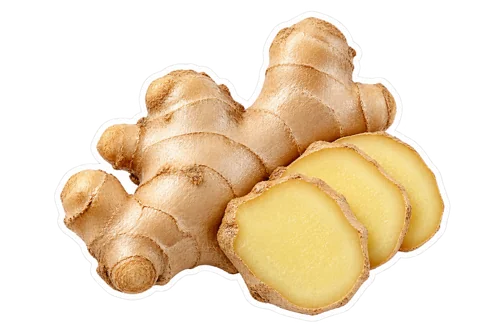
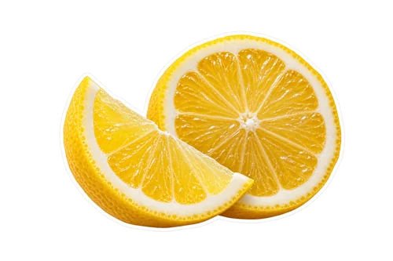

What you will need
- 2 cups fresh pineapple chunks
- 1 inch fresh turmeric root or half teaspoon ground turmeric

1 inch fresh ginger
juice of 1 lemon- pinch of black pepper (optional)
- 1 cup cold water
How to make it
Wash fresh produce, remove seeds and cores, and cut firm ingredients into small pieces.
Add the water or other liquid to the blender first. Add the prepared produce and blend until finely broken down.
For a thinner drink, pour through a clean fine sieve over a bowl and press gently. Keep the pulp if you prefer a thicker blend.
Taste and adjust with a little more water or citrus. Divide into glasses and serve promptly.
Adjust the flavor
Start with less turmeric if you dislike its earthy flavor. Frozen pineapple can replace fresh; soften it enough for your blender. Black pepper is optional for taste.
A useful preparation tip
Turmeric can stain equipment and counters. Wipe splashes promptly and rinse the blender after serving.
Serving and keeping it fresh
Make a small batch close to serving for the best texture. Cover and refrigerate promptly if you save a portion. Separation can happen; stir before serving. Fresh homemade juice is untreated, and lemon does not make it shelf-stable.
FoodSafety.gov recommends refrigerating perishable food within two hours, or one hour above 90°F, and keeping the refrigerator at 40°F or below.
Portions and ingredients
Yield is approximate and depends on produce size and straining. Add water gradually to get the texture you like. Check packaged ingredients for allergens and choose substitutions that suit your needs.
For more preparation choices, see our blender juice guide. You can change a recipe to suit your taste without needing a health promise attached to it.